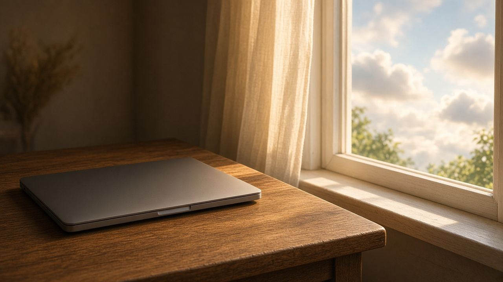

خصوصية
أداة في المتصفح ولا خدمة في السحابة

الجملة «أونلاين» لوحدها مش بتقول فين الملف. في أدوات بتفتح في المتصفح والمعالجة بتتم على جهازك. وفي أدوات بتاخد الملف لخادم عشان تعالجه وترجعه. الاتنين شكلهم صفحة ويب.
إزاي تفرّق
اقرأ الشرح المكتوب على الصفحة، ومش بس الزرار. لو مكتوب إن الصورة أو الـ PDF مش بيتبعتوا، دي دعوى المنتج، وتقدر تراقب شبكة المتصفح لو بتعرف. لو الصفحة بتطلب رفعًا صريحًا لخادم، افترض إن الملف هيخرج. لو بتحط نص في مربع دردشة، النص ده بيتبعت لمقدم الخدمة حسب شروطه، حتى لو الملف الأصلي فضل عندك.
Creativo Tools، في الأدوات اللي مداد بيربط بيها، بيوصف المعالجة جوه المتصفح للصور وPDF وWord. ده وصف منتج منفصل عن مجلة مداد. لو الوصف اتغير على موقعه، صفحة الأداة هي المرجع، مش المقال القديم.
اختار حسب حساسية الملف
صورة هتنزل أصلًا على حساب عام غير بحث فيه أسماء ناس، وغير عقد، وغير كشف درجات. الحاجات دي يا تتعالج على الجهاز، يا متتبعتش. طمس الوجه أداة خصوصية جزئية، ومش بديل عن إنك متصورش الناس من غير سبب. والنموذج السحابي مش مكان تخزين آمن افتراضي لمستندات الجامعة.